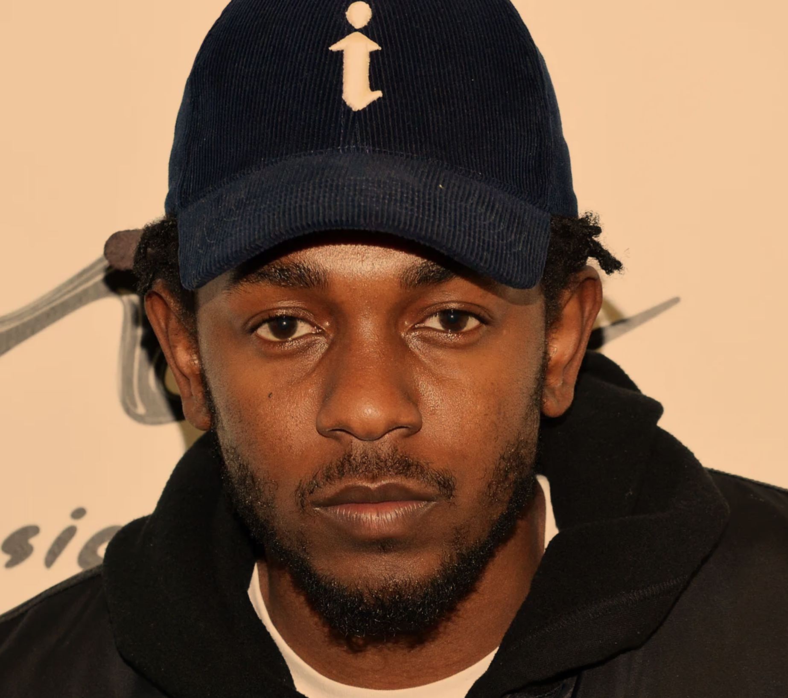
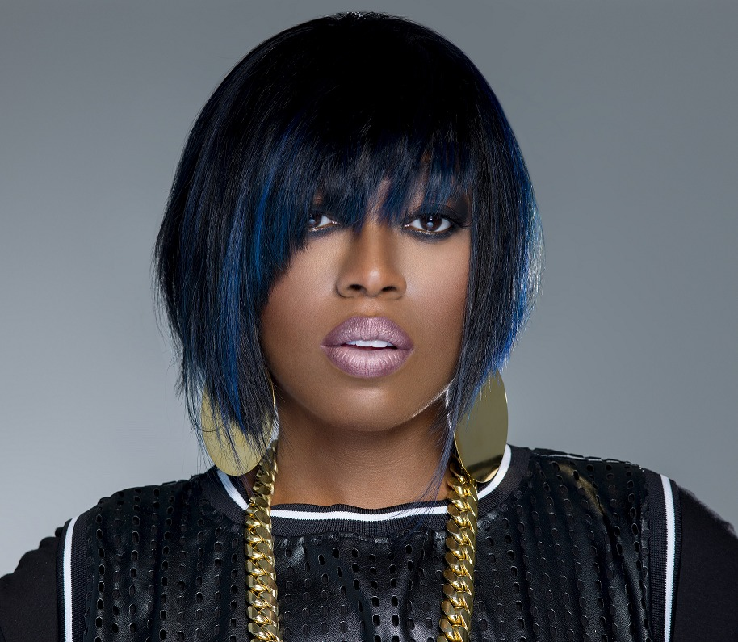

HIP
HOP
Evolución
El hip hop surgió durante los años 1970 en block parties, donde se hizo cada vez más popular en la ciudad de NY, especialmente en el Bronx, donde las influencias afroamericanas y puertoriqueñas se combinaron.
La década de 1980 dio paso a la diversificación del hip hop como género, pasando a desarrollar diferentes estilos con creciente complejidad.
Postumo a los años 1980, el hip hop se limitaba básicamente al entorno geográfico de los Estados Unidos. Sin embargo, durante los ochenta, comenzó a expandirse dando lugar a escenas propias en docenas de países diferentes. En la primera mitad de la década, el b-boying se convirtió en el primer aspecto de la cultura hip hop que llegó a paísess como Alemania, Japón, Australia y Sudáfrica.
Los latinos jugaron un papel importante en el desarrollo inicial del hip hop, lo que se relaciona con la expansión del estilo por muchas zonas de Latinoamérica.
La "edad de oro" del hip hop (o simplemente "edad dorada") es el nombre dado a un período
en la historia del hip hop, que suele considerarse comprendido entre mediados de los 1989
y mediados de los 1990s. Se caracteriza por su diversidad, calidad, innovación e influencia.
La popularidad del hip hop continúo durante los años 2000. En esta década, el disco
The Marshall Mathers LP de Eminemvendió cerca de diez millones de copias en los
Estados Unidos y fue el álbum más rápidamente vendido de toda la historia.
Artistas Populares
- 
- 